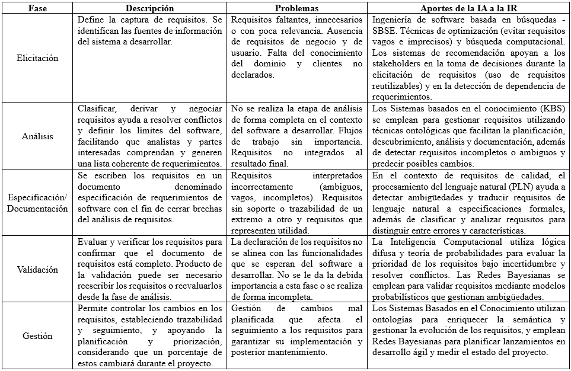

12 Maximización en la ingeniería de requerimientos con inteligencia artificial

Palabras clave: Software de Requerimientos, Ingeniería de Requerimientos, Inteligencia Artificial, Ambigüedad, Maximizar, Calidad.
12.1 Introducción
Conforme los años pasan, la globalización y tecnologías mejoran. El uso indispensable de sistemas y el desarrollo de proyectos de alta calidad se vuelven más exigentes y complejos. La ingeniería de requerimientos juega un papel fundamental, siendo la base de cualquier proyecto y su mala planificación y desarrollo puede determinar si un proyecto va a fracasar.
La inteligencia artificial y más específicamente el procesamiento del lenguaje natural, llega a ser una herramienta poderosa que puede ser de gran ayuda para el análisis de todas las fases de la ingeniería de requerimiento, implementando mejoras específicas para maximizar la calidad de la toma de requerimientos y por consiguiente mejores bases para la construcción de cualquier proyecto.
12.2 Artículo
Ingeniería de requerimientos
¿Alguna vez te has preguntado cómo un proyecto puede triunfar o fracasar? Esto obviamente viene ligado a varios factores, como el utilizar una tecnología inadecuada, pruebas insuficientes, problemas con la gestión de recursos, entre otros. Pero, lo que va a decidir si un proyecto va a triunfar o fracasar será el cómo se construyen sus bases, por lo cual la ingeniería de requisitos es considerada como la fase más importante en los proyectos de software.
La ingeniería de requerimientos se describe como la disciplina que abarca los procesos para especificar los requisitos, analizarlos y perfeccionarlos para el comienzo de su desarrollo. Esta presenta diferentes fases que comienzan con la de elicitación, que es la manera de extraer información importante de alguien a través de una conversación educada o cotidiana. Siendo esta la que declara los requerimientos para especificación y propósito del software, siguiendo con la fase de análisis, donde a los requerimientos se deben analizar para que cumplan con una buena consistencia y exactitud, luego sigue la fase de documentación, en la cual se negocian y verifican los requerimientos con los stakeholders, personas interesadas, y por último la fase de gestión, donde se hacen los cambios respectivos a los requerimientos.
Desafíos en la búsqueda de los requerimientos
A lo largo del tiempo, las fases de la ingeniería de requerimientos pasaron a ser lineales a ser iterativas, esto a causa de cambios en el entorno del cliente o de errores en el análisis de todo el proceso. La ingeniería de software no es invulnerable a actividades poco eficientes en cada una de las fases que la conforman, ocasionando problemas que afecten directamente al desarrollo del software.
De esto llegan a surgir requisitos ambiguos, estos siendo definidos de forma vaga por errores de comunicación por ambas partes del proyecto, que a la larga van a afectar con el desarrollo de este. También hay otros factores a considerar como la baja participación de todos los comprometidos en la elaboración de los requisitos, dando lugar a requisitos conflictivos que no cuentan con la precisión necesaria. Todo esto afecta directamente la trazabilidad, siendo este el proceso que define cada uno de los requerimientos desde su concepción hasta su implementación en el código fuente.
Inteligencia artificial
Hoy en día la inteligencia artificial juega un papel muy importante en todo el mundo, llegando a transformar algunos aspectos cotidianos hoy en día, pero generando un gran impacto en el mundo de la tecnología.
Está definiéndose como las máquinas tienen la capacidad de aprender a través de diferentes experiencias, con el fin de acercarse a lo más cercano del comportamiento humano. Actualmente, la inteligencia artificial se encarga de la automatización de procesos, los algoritmos de búsqueda, el procesamiento de lenguaje natural, la automatización de procesos, el reconocimiento de patrones, la conducción automatizada, entre otros.
La unión hace la fuerza
A lo largo de los años han surgido investigaciones de como la capacidad de la inteligencia artificial podría repercutir en la ingeniería de requerimientos, con el fin de mejorar la calidad del software entregado, el tiempo de desarrollo y obviamente brindando un gran apoyo a los profesionales. Esto utilizando técnicas para optimizar cada una de las fases del ciclo del desarrollo del software, como la mejora de la coordinación entre ambas partes, incluyendo la mejora de comunicación para evitar conflictos a futuro; todo esto priorizando la trazabilidad de los requisitos, teniendo como resultado el máximo rendimiento. A continuación, se presenta una tabla con los aportes de la IA a cada una de las fases de la ingeniería de requerimientos:

Mediante el aprendizaje de los componentes semánticos de historias de usuarios, la IA sería capaz de proporcionar proyecciones del esfuerzo necesario para completar cada uno, esto facilitando la planificación de todo un proyecto de software, repercutiendo en una mejor producción. También está la idea de que se puede aplicar diferentes paradigmas para la reducción de errores y con ello la optimización de procesos, problemas que persisten hoy en día.
El estigma del uso de IA
A pesar de las grandes ventajas como herramienta que apoyo que ofrece la IA en la ingeniería de requerimientos, muchos profesionales aún son escépticos en el uso de esta, por diferentes motivos como, por ejemplo, la veracidad de los datos, temas más intrínsecos como el ego que puede llegar a sentir una persona cuando una herramienta de IA llega a realizar su “trabajo” de mejor manera. Todos estos aspectos pueden provocar que la adopción de estas herramientas para empresas, consultoras o ingenieros llegue a ser un poco más complicada.
12.3 Conclusiones
La ingeniería de requerimientos es sin duda la parte más fundamental y la columna vertebral de todo proyecto, de esta depende si un proyecto fracasará o no, vale la invertir recursos en todas las fases e iteraciones para lograr que los cimientos sean seguros para el completo desarrollo de la obra.
Con el auge de la IA, la ingeniería de requerimientos experimentará el punto más alto de calidad al momento del desarrollo de proyectos, ya que las iteraciones continuas y el constante asesoramiento de esta herramienta dará hincapié a la reducción de tiempos, minimización de errores y ambigüedades, claridad en todas las etapas y como resultado mejores sistemas.
12.4 Referencias
[1] Sanguino-Reyes, Magreth Rossio, y Byron Cuesta-Quintero. 2022. «La Inteligencia Artificial En “La ingeniería De Requerimientos: Un Estudio De Mapeo sistemático”. Mundo FESC 12 (23):209-24. https://goo.su/v2R7h
[2] Arenas Seleey, Daniel, Cristian Eduardo Prieto Triana, y Diana Carolina Chacón López. 2022. “Ingeniería De Requerimientos E Inteligencia Artificial: Una revisión De La Literatura”. Revista Colombiana de Tecnologias de Avanzada (RCTA) 1 (39):100-106. https://goo.su/vXJvz9